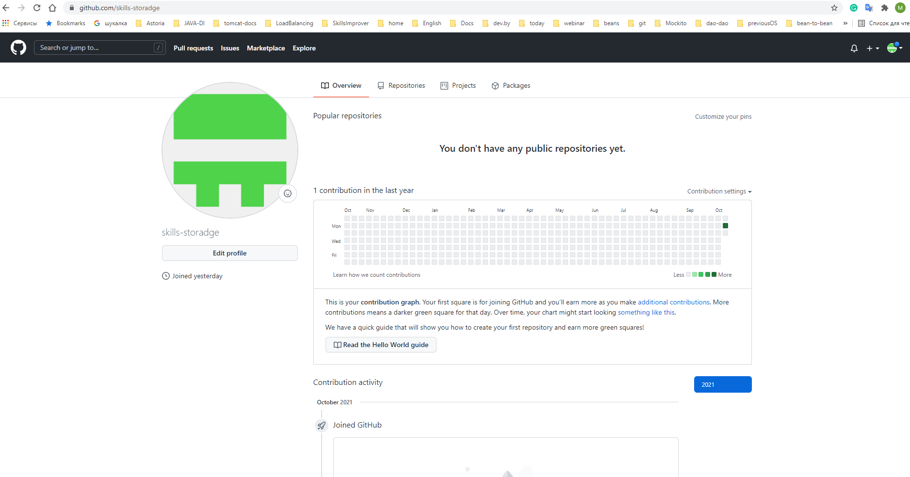
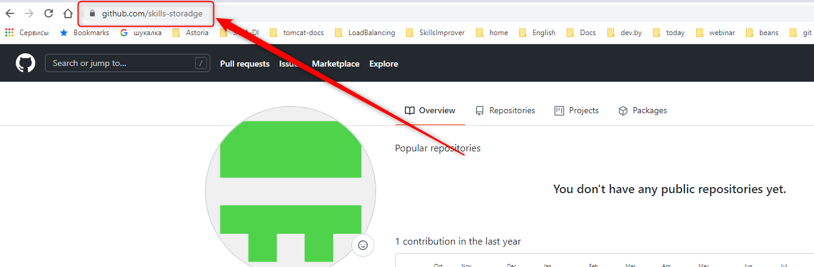
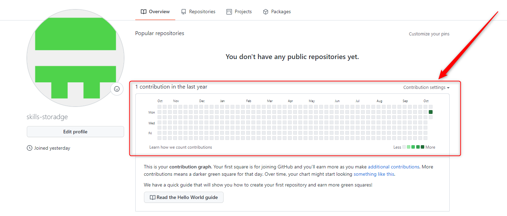

Для того, чтобы открыть страницу профиля, из меню «Самой главной кнопки» выберите один из двух пунктов (опять же – оба пункта делают одно и тоже – открывают профиль!):
Your Profile:И тот и другой выбор приведет вас на страницу вашего профиля, который будет выглядеть вот так:
И здесь, вроде как, снова:
Почему же тогда этот шаг упражнения так важен?
Потому что смотреть надо не на саму страницу (на которой сейчас ничего нет, но на которой все обязательно будет), а на ссылку в адресной строке браузера!
Именно эта ссылка и есть:
Ваше публичное имя на GitHub!
ГОВНО-АБЗАЦ! ПЕРЕПИШИ! Именно ее требуют от вас HR-менеджеры, или синьор-программисты, которые собираются вас собеседовать, но так как не знают, чего у вас спрашивать, то сначала предпочитают посмотреть ваш код
Именно эту ссылку от вас просят при переписке, когда говорят:
И самое главное, именно эту ссылку вы должны скопировать из адресной строки вашего браузера и
НЕМЕДЛЕННО ВСТАВИТЬ В ВАШЕ РЕЗЮМЕ!
То есть, ваше резюме уже сегодня должен вылядеть вот так: ФОТА, Контакты, Github. СДЕЛАЙ КАРТИНКУ!
Это и есть самое ценное, что вы сможете вынести из этого упражнения
... Кстати, а что это вот за сеточка такая?
И почему нарисовано так много квадратиков, если все они одинаково серые?
О-о-о, это прекрасная сеточка для того, чтобы стимулировать эрогенные зоны вашего ЧСВ! И с ней связано множество мемов про «GitHub сына маминой подруги».
Но про нее не будет отдельного упражнения.
Это будет ваше собственное упражнение длинною во всю вашу IT-жизнь